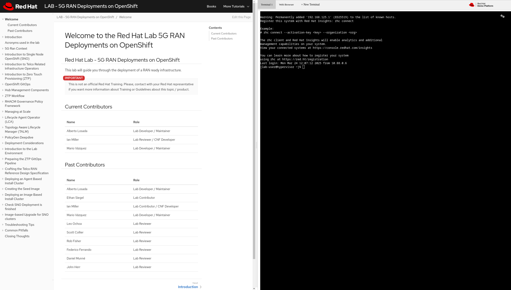
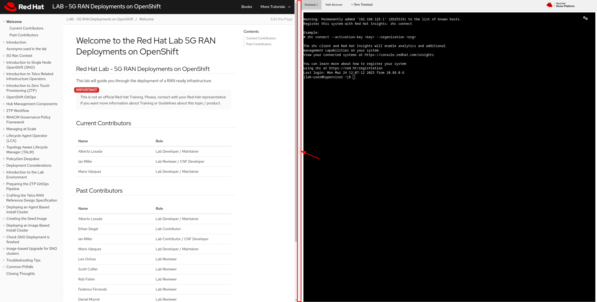
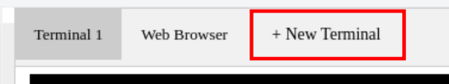
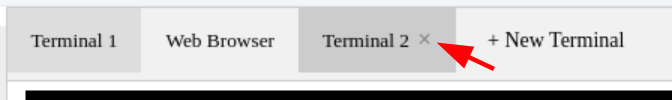
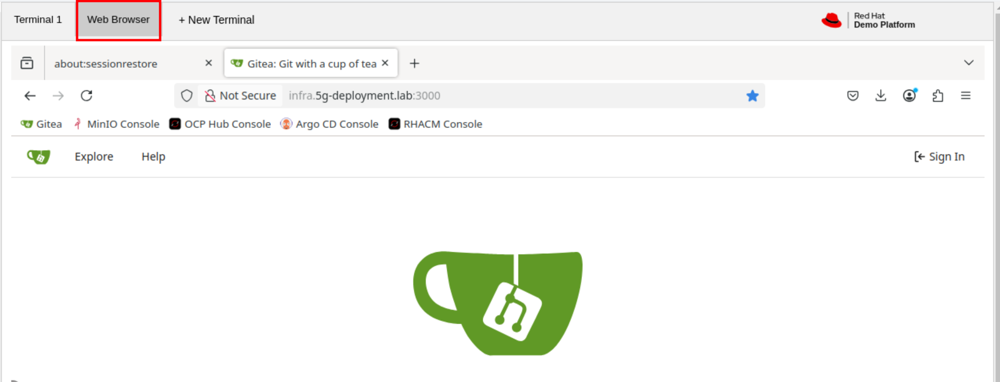
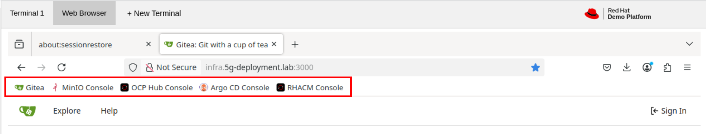
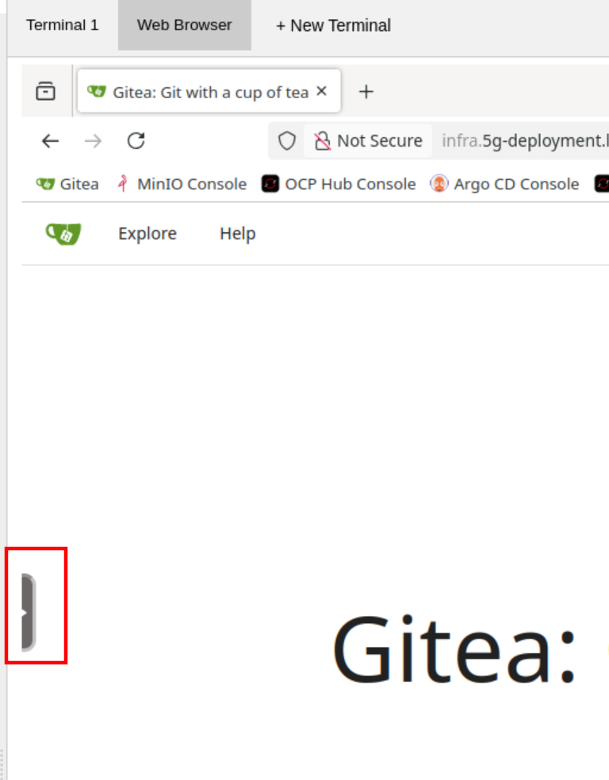
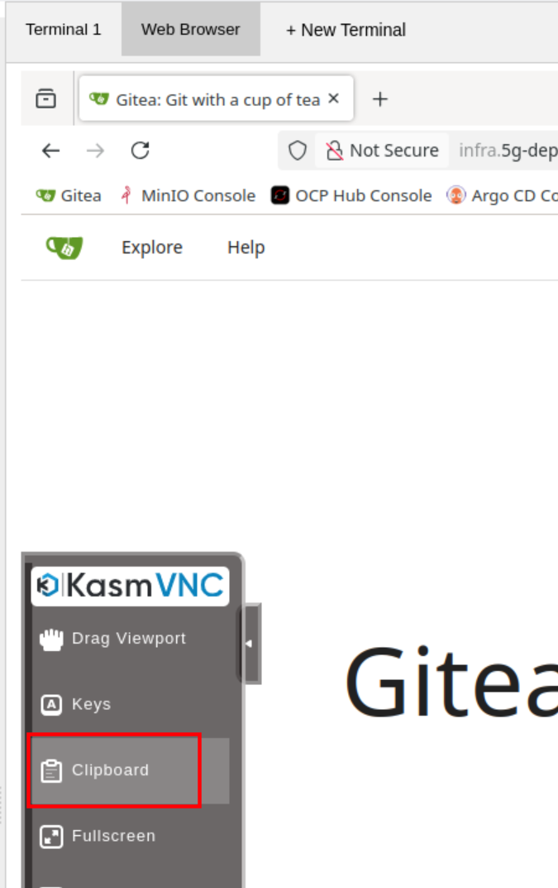

Welcome to the Red Hat Lab 5G Core RDS Deployments on OpenShift
Red Hat Lab - 5G Core RDS Deployments on OpenShift
This lab will guide you through the deployment of a Telco 5G Core ready infrastructure following the Reference Design Specification (RDS) crafted by the Red Hat CNF team. The lab consists of two parts, the first part introduces essential concepts for planning and executing a 5G Core Deployment on OpenShift. The second part involves a practical scenario where you will deploy Telco Core-enabled OCP using ZTP technologies and methodologies.
| This is not an official Red Hat Training. Please, contact with your Red Hat representative if you want more information about Training or Guidelines about this topic / product. |
Since the second part requires a lab environment, we recommend ordering it before starting the first part to ensure it is ready when needed. If you are a Red Hat employee, you can order a pre-configured lab environment through the Red Hat Demo Platform. Please note that running this lab incurs a cost of approximately $56. When the lab is launched, by default you will have 12 hours to complete it before it is destroyed. The estimated total duration for completing the lab is approximately 12 hours, including 2 hours for provisioning, 5 hours for hands-on work, and a 5-hour buffer. If additional time is required, the duration can be manually extended up to a maximum of 24 hours.
For users without access to the demo platform, an alternative guide for deploying the lab environment is available at here.
Introduction to the Showroom Environment
As part of the lab deployment, a web application for accessing the lab environment has been deployed. We refer to this application as Showroom. This app consists of two parts:
-
The left side of the app displays the lab content.
-
The right side of the app provides access to the lab environment. This section contains multiple tabs: one or more terminals for running commands, and a web browser for accessing various web consoles.
The following image shows how the web app looks like:

Resizing App Sections
You can resize the sections (Content/Terminal) using the split bar, as shown in the image below. Click the bar (red arrow) and drag it left or right to resize the sections.

Opening Multiple Terminals
You can have multiple terminals open. Each terminal operates independently. You cannot close the first terminal or move it to a different position. Closed terminals cannot be recovered.
To open a new terminal, click the "+ New Terminal" tab:

To close a terminal, click the "x" button.

Web Browser
To access the lab’s web browser, click the "Web Browser" tab.

From this Firefox browser, you can access various consoles. The consoles used in the lab are pre-configured as bookmarks. Feel free to use them.

If you close the Firefox browser, you can reopen it by right-clicking on the right side of the screen and selecting "Firefox".

Clipboard should be synced between your desktop and the Firefox browser, in case this is not working you can send copied content to the browser’s clipboard by clicking the small black menu on the left, and selecting "Clipboard."

